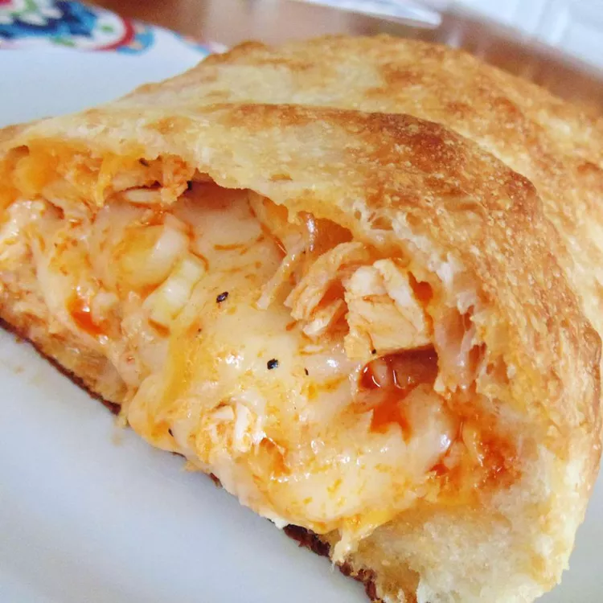

Buffalo Chicken Calzone

This recipe is tasty and very easy to make. Great to slice up for a party or for Sunday football.
Serve with blue cheese dressing for dipping sauce.
Ingredients
- 1 pound skinless, boneless chicken breast halves
- 2 tablespoons butter
- 1/4 cup Buffalo wing sauce
- 1 refrigerated pizza dough
- 2 tablespoons vegetable oil, divided
- 2 cups shredded mozzarella cheese
Directions
-
Preheat oven to 410 degrees F (210 degrees C).
Grease a pizza pan.
-
Place chicken into a large pot and cover with
salted water; bring to a boil.
Cook the chicken breasts until no longer
pink in the center and the juices run clear,
about 15 minutes. An instant-read thermometer
inserted into the center should read at least
165 degrees F (74 degrees C). Transfer
chicken to a bowl and shred with two forks.
-
Melt butter in a skillet over medium-high heat.
Cook and stir chicken and Buffalo wing sauce in
the hot butter until chicken is coated and heated
through, 2 to 4 minutes.
-
Turn pizza dough out onto a generously floured surface.
Roll dough into a 12-inch round. Brush dough with
1 tablespoon vegetable oil and spread 1 cup
mozzarella cheese in the center of the dough,
leaving a 1-inch border.
Spread chicken mixture over cheese;
top chicken mixture with remaining 1 cup cheese.
-
Fold pizza dough in half and pinch edges together to seal.
Transfer calzone to prepared pizza pan
and brush top with remaining 1 tablespoon oil.
-
Bake in the preheated oven until crust
is golden brown, 17 to 20 minutes.
Bon Appétit!
Back to Home